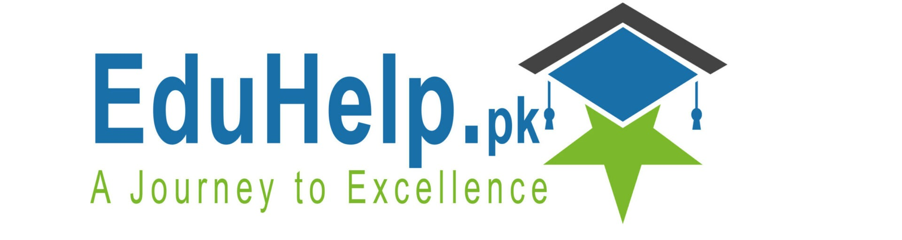

Welcome to EduHelp
Comprehensive Educational Resources
EduHelp provides a wide range of educational resources designed to support and enhance student learning. Our materials include:
- In-Depth Study Guides: Thoroughly researched guides covering various subjects, ensuring students grasp complex concepts with ease.
- Clear Explanations: Concepts are broken down into simpler terms to make learning straightforward and less overwhelming for students.
Exam Preparation Tools
Our platform offers essential resources for exam readiness, including:
- Current and Previous Exam Timetables: Up-to-date schedules for Matric (10th grade) and Intermediate (12th grade) exams to help students organize their study plans effectively.
- Access to Board Results: Quick and easy access to examination results from all educational boards in Pakistan, ensuring timely updates. Explore our Results Category for more details.
Educational Blog
EduHelp hosts a comprehensive blog that covers a range of educational topics, such as:
- Latest Educational News: Keep informed about the newest trends and updates in the education sector.
- Expert Insights and Tips: Detailed articles offering valuable insights into effective learning techniques, exam strategies, and educational practices.
Community Support
We believe in building a strong educational community through:
- Empowering Educators and Learners: Providing resources and tools that enable students, teachers, and parents to contribute to educational success.
- Interactive Engagement: Encouraging collaboration and support through forums, discussion boards, and other interactive features.
Mission and Vision
EduHelp is dedicated to making a significant impact on education by:
- Enhancing Learning Opportunities: By providing high-quality educational resources and support, EduHelp aims to improve learning opportunities for students across Pakistan.
- Empowering Stakeholders: Empowering individuals within the educational ecosystem to actively contribute to academic success and development.